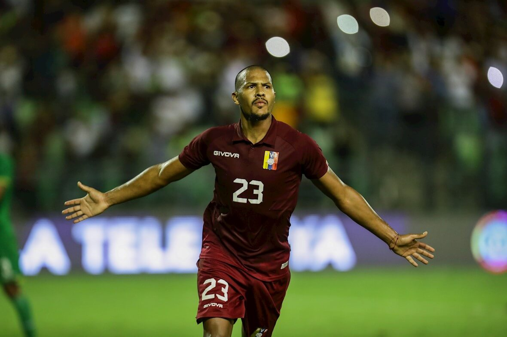

Rondon Blue
Finalmente, Everton le dio gusto a Rafael Benítez en el mercado de fichajes con la contratación del delantero venezolano, Salomón Rondón. Ya han compartido juntos en otros proyectos y el español no dudó en volver a traerlo a la Premier League para que le de una mano en los Toffees. Sin embargo, el sudamericano tiene ilusión de compartir cancha con la estrella del equipo, James Rodríguez. Rondón ya tuvo la oportunidad de compartir sus primeras palabras con el equipo de comunicaciones del club. Como era de esperar, su entrevista tuvo repercusión en las redes en español del club y allí hubo tiempo para hablar de todo. De hecho, el jugador le preguntaron por James Rodríguez y no dudó en elogiar al mediocampista colombiano a quien sigue considerando como "un gran '10'". En todo caso, las palabras de Salomón no quedaron solo en simples elogios. Por el contrario, hizo público su deseo de poder compartir en el equipo con él para jugar juntos. El venezolano aseguró que junto a él podrían aumentar más las posibilidades de anotar goles. Por eso, espera tener la oportunidad de armar sociedad en ataque con él, algo que por el momento parece difícil con la decisión de Rafael Benítez de no contar con él.
https://t.co/n0GneUMtv7 pic.twitter.com/0fqcOsEui1
— Everton (@EvertonESP) September 11, 2021